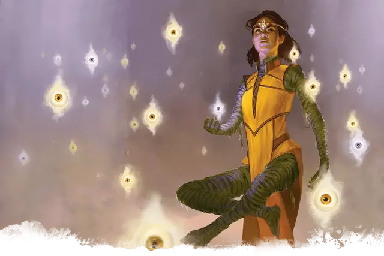

Валин Сарнастер
Valin Sarnaster
Средняя Нежить, законно-злая, именной НИП

Класс Доспеха 17 (природный доспех)
Хиты 97 (13к8 + 39)
Скорость 20 футов
| мод | спас | ||
|---|---|---|---|
| СИЛ | 18 | +4 | +4 |
| ЛОВ | 10 | +0 | +0 |
| ТЕЛ | 17 | +3 | +8 |
| мод | спас | ||
|---|---|---|---|
| ИНТ | 11 | +0 | +5 |
| МДР | 18 | +4 | +9 |
| ХАР | 16 | +3 | +8 |
Навыки История +5, Религия +5
Уязвимость к урону огонь
Иммунитет к урону некротическая энергия, яд; дробящий, колющий, рубящий от немагических атак
Иммунитет к состояниям паралич, очарование, отравление, истощение, испуг
Чувства тёмное зрение 60 футов, пассивное Восприятие 14
Языки все, известные при жизни
Опасность 15 (13000 опыта)
Бонус мастерства +5
Особенности
Сопротивление магии. Валин совершает с преимуществом спасброски от заклинаний и прочих магических эффектов.
Восстановление. . Пока её сердце остается в теле Алессии, особенность «Восстановление» Валин позволяет ей переродиться внутри саркофага в зоне T6.
Использование заклинаний. Валин является заклинателем 10-го уровня. Её базовой характеристикой является Мудрость (Сл спасброска от заклинания 17, +9 к попаданию атаками заклинаниями). У неё подготовлены следующие заклинания жреца:
• Заговоры (неограниченно): священное пламя [sacred flame], чудотворство [thaumaturgy]
• 1 уровень (4 ячейки): направляющий снаряд [guiding bolt], приказ [command], щит веры [shield of faith]
• 2 уровень (3 ячейки): божественное оружие [spiritual weapon], тишина [silence], удержание личности [hold person]
• 3 уровень (3 ячейки): подсматривание [clairvoyance], рассеивание магии [dispel magic]
• 4 уровень (3 ячейки): предсказание [divination], переносящая дверь [dimension door]
• 5 уровень (2 ячейки): заражение [contagion], наблюдение [scrying]
• 6 уровень (1 ячейка): поражение [harm]
Черта характера. "Я видела будущее. Поэтому меня ничто не удивляет."
Идеал. "Знать все - цель самых могущественных оракулов. И я буду самым могущественным оракулом из всех."
Привязанность. "Этот храм был создан для меня. Это пришло ко мне. Это часть меня."
Слабость. "Любое будущее допускающее возможность моей неудачи, должно быть тщательно отслежено, разложено по полочкам и затем уничтожено."
Действия
Мультиатака. Валин может использовать Ужасающий взгляд, и совершает одну атаку разлагающим кулаком.
Разлагающий кулак. Рукопашная атака оружием: +9 к попаданию, досягаемость 5 футов, одна цель. Попадание: Дробящий урон 14 (3к6 + 4) плюс урон некротической энергией 21 (6к6). Если цель — существо, она должна преуспеть в спасброске Телосложения Сл 16, иначе станет проклятой гнилью Валин. Проклятая цель не может восстанавливать хиты, и её максимум хитов уменьшается на 10 (3к6) за каждые прошедшие 24 часа. Если проклятье уменьшает максимум хитов цели до 0, цель умирает, а её тело становится прахом. Проклятье длится до тех пор, пока не будет снято заклинанием снятие проклятья или другой магией.
Ужасающий взгляд. Валин нацеливается на одно существо, которое видит в пределах 60 футов. Если цель видит Валин, она должна преуспеть в спасброске Мудрости Сл 16 от этой магии, иначе станет испуганной до конца следующего хода Валин. Если цель проваливает спасбросок на 5 и более единиц, она также становится парализованной на тот же период. Цель, преуспевшая в спасброске, получает иммунитет к Ужасающему взгляду всех мумий и лорд-мумий на следующие 24 часа.
Легендарные действия
Валин может совершить 3 легендарных действия, выбирая из представленных ниже вариантов. За один раз можно использовать только одно легендарное действие, и только в конце хода другого существа. Валин восстанавливает использованные легендарные действия в начале своего хода.
Атака. Валин совершает одну атаку разлагающим кулаком или использует Ужасающий взгляд.
Богохульное слово (стоит 2 действия). Валин произносит богохульное слово. Все существа, не являющиеся нежитью, в пределах 10 футов от лорд-мумии, слышащие магические слова, должны преуспеть в спасброске Телосложения Сл 16, иначе станут ошеломленными до конца следующего хода Валин.
Канал отрицательной энергии (стоит 2 действия). Валин магическим образом выпускает отрицательную энергию. Существа в пределах 60 футов от Валин, включая тех, что стоят за препятствиями и углами, до конца следующего хода Валин не могут восстанавливать хиты.
Ослепляющая пыль. Вокруг Валин магическим образом начинает вращаться ослепляющая пыль и песок. Все существа в пределах 5 футов от Валин должны преуспеть в спасброске Телосложения Сл 16, иначе станут ослепленными до конца своего следующего хода.
Песчаный вихрь (стоит 2 действия). Валин магическим образом превращается в песчаный вихрь, перемещается на расстояние до 60 футов и принимает свой обычный облик. Находясь в облике вихря, Валин обладает иммунитетом ко всем видам урона, и не может быть опутана, ошеломлена, сбита с ног, схвачена, и не может стать окаменевшей. Снаряжение, несомое и носимое лорд-мумией, остается у неё.
Описание
Валин Сарнастер совершенно развращена своими видениями будущего, в которых она видит себя бессмертной наследницей
На первом шагу этого своего пути к божественности Валин превратилась в могущественную нежить и стала лордом мумией Савраса. Создание Живых Каноп попало к ней много лет назад, и одержимость описанными в ней темными ритуалами и направили оракула на ее нынешний путь.
В глубине древних гробниц деспотичные монархи и высшие жрецы темных богов лежат в покое без сновидений, в ожидании времени, когда они смогли бы вернуть себе трон и восстановить свои древние империи. Регалии их ужасающего правления до сих пор украшают их обернутые льном тела, их гниющие одежды с вышитыми на них злыми символами и бронзовые доспехи с выгравированными гербами династий, павших тысячи лет назад.
См. дополнительно статью: "Бестиарий: Мумии"